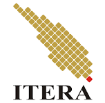

UROTERA
UROTERA bergerak dalam bidang teknologi, khususnya robotika dan otomasi, UAV, serta Aquatic Robotic Vehicle.

Temukan kegiatan mahasiswa sesuai minat dan bakatmu.
Unit Kegiatan Mahasiswa atau UKM menjadi salah satu wadah bagi mahasiswa untuk mengembangkan minat, bakat, dan kegiatan di luar perkuliahan.
Melalui website ini, kamu dapat mengenal beberapa UKM yang ada di lingkungan ITERA berdasarkan bidang kegiatannya.
UROTERA bergerak dalam bidang teknologi, khususnya robotika dan otomasi, UAV, serta Aquatic Robotic Vehicle.
KMPA ITERA merupakan wadah bagi mahasiswa yang memiliki minat terhadap kegiatan alam bebas.
MADANI ITERA menjadi wadah pengembangan kegiatan keislaman bagi mahasiswa.
GAMAHIRA mewadahi mahasiswa Hindu ITERA dalam kegiatan keagamaan dan pelestarian budaya.
| No | Nama UKM | Bidang | Fokus Kegiatan |
|---|---|---|---|
| 1 | UROTERA | Teknologi | Robotika dan otomasi |
| 2 | KMPA ITERA | Kegiatan Alam | Kegiatan alam bebas |
| 3 | MADANI ITERA | Keagamaan | Pengembangan kegiatan keislaman |
| 4 | GAMAHIRA | Keagamaan dan Budaya | Kegiatan keagamaan dan budaya Hindu |
| 5 | VOLLTERA | Olahraga | Bola voli |
| 6 | ITERA Chess Club | Olahraga | Permainan catur |